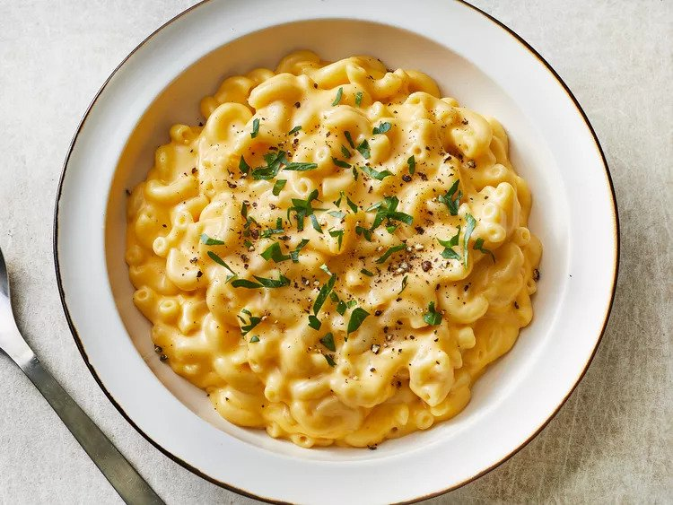

Simple Macaroni and Cheese

Description
A simple recipe for macaroni and cheese! It's a quick and easy alternative for boxed mac and cheese.
In just 25 minutes, you can make this comfort dish using staple ingredients found in everyone's pantry!
You'll want to save this recipe somewhere, but don't worry because you'll end up memorizing it after a couple of times!
Steps:
- Boil macaroni for 8 minutes
- Melt butter in a sauce pan over medium heat
- Add flour, salt, and pepper into melted butter and stir until smooth
- Pour in milk to the butter, stirring for about 5 minutes
- Add cheese and stir until melted
- Drain macaroni and mix into the cheese mixture
- Serve and enjoy!